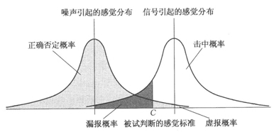
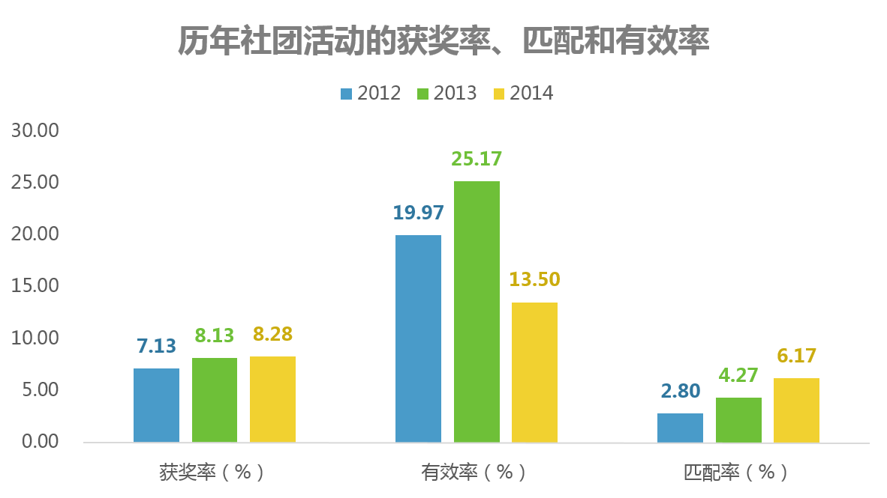
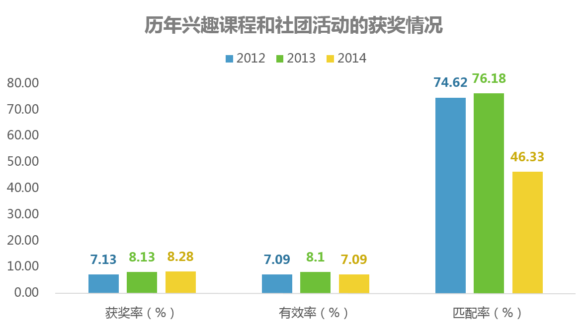

信号检测论
学校举办社团活动和学生竞赛获奖之间存在一定的联系。因此，可以将其和信号检测论的相关理论相结合。通过信号检测论，我们可以把获奖的记录作为检测信号，参加社团作为事件驱动因子，并可以定义四类对象。
- 参加社团同时获奖的记录作为有效信号
- 参加社团但未获奖的记录作为虚报信号
- 未参加社团但获奖的记录作为漏报信号
- 未参加社团也未获奖的记录作为无信号
有效信号与事件驱动因子的比率作为有效率（有效驱动）。同样的，有效信号与检测信号的比率作为匹配率。要提高有效率，需要增加参加社团同时获奖的人数，降低参加社团未获奖的人数；要提高匹配率，需要提高参加社团同时获奖的人数，降低没有参加社团同时获奖的人数。
可以参照下图：

图1 信号检测论图示第一步：分析模型的建立
基于上文中提到的相关内容，我们可以形成这样一张2×2的矩阵表。
| 获奖 | 未获奖 | |
|---|---|---|
| 参加社团 | 有效（A） | 无效（B） |
| 未参加社团 | 额外（C） | 无关（D） |
如上表，获奖率、有效率和匹配率的计算公式分别为：
不妨先使用虚拟数据验证下获奖率和有效率以及匹配率之间的关系：
以两个学生数量均为500人的学校为例比较，已知学校1的情况为：
| 学校1 | 获奖 | 未获奖 |
|---|---|---|
| 参加社团 | 10 | 80 |
| 未参加社团 | 10 | 400 |
可以得到学校1的计算结果：
获奖率=(10+10)/(10+80+10+400)=4.00%;
有效率=10/(10+80)=11.11%;
匹配率=10/(10+10)=50.00%。
已知学校2的情况为：
| 学校2 | 获奖 | 未获奖 |
|---|---|---|
| 参加社团 | 5 | 25 |
| 未参加社团 | 0 | 470 |
可以得到学校2的计算结果：
获奖率=(5+0)/(5+25+0+470)=1.00%;
有效率=5/(5+25)=16.66%;
匹配率=5/(5+0)=100.00%。
通过计算结果可以看到，学校2的获奖率比学校1稍低，但是在有效率和匹配率方面处于优势。以此可以看到有效率和匹配率与获奖率之间并不存在一一对应的关系。
第二步：实际数据的测试
既然已经建立了计算分析的模型，因此需要实际的数据进行操作和计算，最终得到如下结果：

图2 计算结果a2014学年，学生的获奖率8.28%，参加社团活动的有效率13.50%，参加社团活动的匹配率6.17%。相较于2012学年和2013学年，获奖率呈现小幅上升趋势，有效率在2014学年大幅下降，匹配率呈现良好的上升趋势。
第三步：数据结果的分析
获奖率的上升，反映获奖的学生人数在所有学生中的比例有所提升，可能是学校鼓励和学生积极的情况。
有效率反映参加社团活动并获奖的学生在参加社团活动的学生中的比例，一定程度反映参加社团活动的学生的获奖情况；
匹配率反映参加社团活动并获奖的学生在获奖学生中的比例，一定程度反映社团活动在获奖学生中的覆盖情况可以看出在2012学年至2014学年，社团活动的在获奖学生中的匹配逐年增加。
第四步：数据结果的拓展
但是，考虑到学校除了社团还有很多拓展型课程（俗称兴趣课程），所以，如果在换一个角度考虑问题的话，是不是又能变成：那些没有参加社团但是获奖的学生是不是因为他们有报了相关的兴趣班所以对他们的成长更有利呢？
重复以上步骤，得到如下结果：

图3 计算结果b如上图所示，2014学年，学生的获奖率8.28%，参加走班制兴趣课程和社团活动的有效率7.09%，参加走班制兴趣课程和社团活动的匹配率46.33%。相较于2012学年和2013学年，获奖率呈现小幅上升趋势，有效率呈现小幅波动，匹配率在2014学年大幅下降。其中
获奖率的上升，反映获奖的学生人数在所有学生中的比例有所提升，可能是学校鼓励和学生积极的情况。;
有效率反映参加社团活动并获奖的学生在参加社团活动的学生中的比例，一定程度反映参加社团活动的学生的获奖情况。
匹配率反映参加社团活动并获奖的学生在获奖学生中的比例，一定程度反映社团活动在获奖学生中的覆盖情况。
最后，将两次计算的结果对比：得到下表：
| 类型 | 2012 | 2013 | 2014 | |
|---|---|---|---|---|
| 获奖率(%) | / | 7.13 | 8.13 | 8.28 |
| 有效率(%) | 参加社团 | 19.97 | 25.17 | 13.50 |
| 参加兴趣课 | 7.09 | 8.10 | 7.09 | |
| 匹配率(%) | 参加社团 | 2.80 | 4.27 | 6.17 |
| 参加兴趣课 | 74.62 | 76.18 | 46.33 |
其实差距还是相当大的，在只算社团的情况下，有效率明显更高、匹配率相对较低，这一结论其实很容易理解，兴趣课的覆盖面几乎是全体学生，而社团相对较少，所以相对的，参加竞赛的学生哪怕没有参加社团，参加兴趣课程几乎是一定的。
结束语：
这个结论足够了吗？其实并没有，从悲观的视角来看，实际上，哪怕是算上了上兴趣课的学生，匹配率依然没有达到100%。这着实令人惊讶，那么，究竟这些“民间高手”们去哪里了呢？由此可能引申出几个关键问题：
- 是否家长认为学校里的教育水平不足，所以把孩子的兴趣培养寄托在校外的兴趣班上？
- 学校方面的数据是否存在问题？
- 学校实际上并不能真正的筛选在某方面有潜力的学生吗？
- 评奖的部门是否真的做到了公平公正？或者说，竞赛评奖的标准究竟是什么？
这些类似的问题自然没有办法在本文中解决了，需要进一步的研究。而且不少问题实际上可能和教育的方方面面有关。路还长，仍需努力啊...